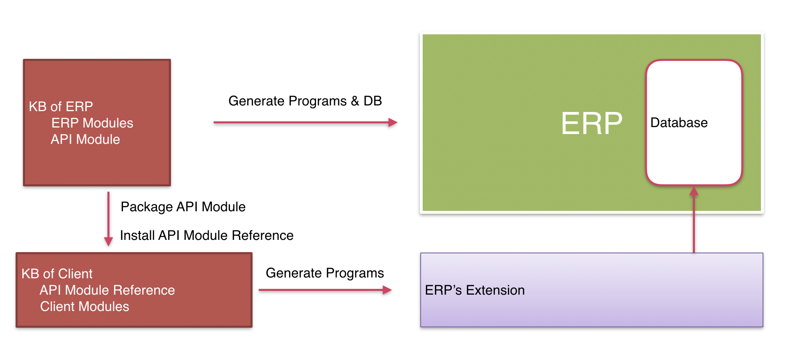

You can package and distribute modules that access the database. So you can create an API that can be integrated directly into another KB using the functionality of Modules Distribution in GeneXus.
The following assumptions apply
The following draft shows a KB that generates programs and a database of an ERP. It contains a module with objects that have the Object Visibility property set to 'Public', that define the API that is packaged.
After installing the module in the other KB, there it is included as a referenced module. Other objects defined in this 2nd KB may define a new data model or not, anyway this new data model will have no references to the one defined and maintained by the ERP, so the programs generated by this KB will access their own tables. When deploying this 2nd KB, the packaged programs of the referenced module will be included automatically if required.

| Backlinks |
| Modules Distribution in GeneXus |